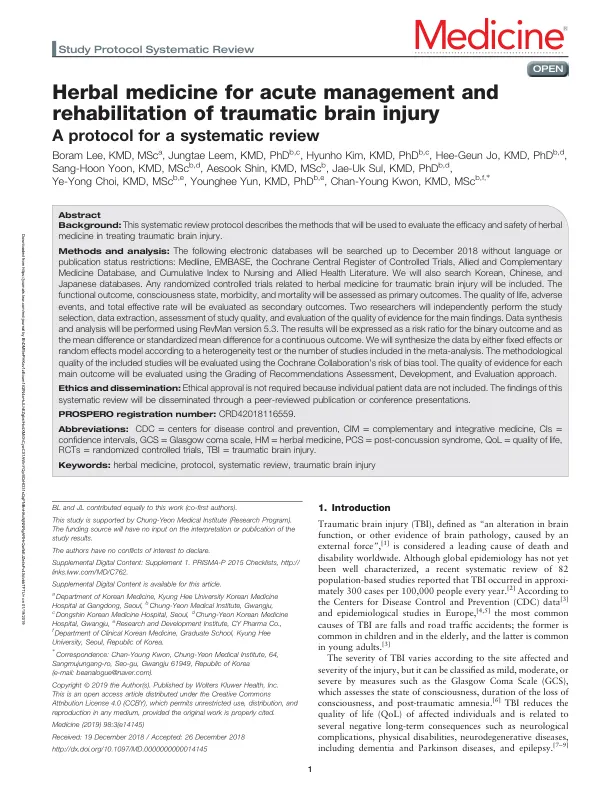

Herbal medicine for acute management and rehabilitation of traumatic brain injury
Lee B, Leem J, Kim H, Jo HG, Yoon SH, Shin A, Sul JU, Choi YY, Yun Y, Kwon CY
Medicine 98(3):e14145

첫 장 · 오픈액세스First page · open access
논문 소개Summary
이 논문은 외상성 뇌손상의 급성기 관리와 재활에 쓰이는 한약의 효과와 안전성을 평가하려는 체계적 문헌고찰의 프로토콜입니다. 고찰을 시작하기 전에 무엇을 어떻게 찾고 어떻게 판단할지를 미리 공개해 두는 글입니다.
검색은 2018년 12월까지, 언어와 출판 상태를 제한하지 않고 진행합니다. 메드라인과 엠베이스, 코크란 중앙등록부, 보완대체의학 데이터베이스, 간호·보건 데이터베이스를 훑고 한국어와 중국어, 일본어 데이터베이스도 함께 봅니다. 대상은 외상성 뇌손상에 한약을 쓴 무작위 대조시험입니다.
일차 결과는 기능적 예후와 의식 상태, 이환율, 사망률입니다. 삶의 질과 이상반응, 총유효율은 이차로 둡니다. 이 순서가 중요합니다. 이 분야의 기존 연구는 총유효율을 주된 결과로 삼는 일이 많은데, 그것은 무엇이 얼마나 좋아졌는지를 알려 주지 않는 지표입니다. 환자에게 실제로 중요한 것을 앞에 두겠다는 뜻입니다.
두 연구자가 각각 문헌 선정과 자료 추출, 질 평가를 하고 결과는 이분형이면 위험비로, 연속형이면 평균차나 표준화 평균차로 냅니다. 이질성 검정과 포함된 연구의 수에 따라 고정효과 또는 랜덤효과 모형을 고릅니다. 포함된 연구의 방법론적 질은 코크란 비뚤림 위험 평가도구로, 주요 결과의 근거 수준은 GRADE 접근법으로 평가합니다.
프로토콜이므로 결과는 없습니다. 개별 환자 자료를 다루지 않으므로 윤리 승인도 필요하지 않습니다. 이 계획은 실제로 수행되어 무작위 대조시험 37편, 참여자 3,374명을 담은 문헌고찰로 이어졌고, 그 결론은 현재의 근거로 한약을 권고할 수 없다는 것이었습니다. 미리 공개한 계획대로 근거의 수준까지 평가했기 때문에 나올 수 있었던 결론입니다.
This paper is the protocol for a systematic review evaluating the efficacy and safety of herbal medicine in the acute management and rehabilitation of traumatic brain injury — a document that sets out in advance what will be searched, how, and by what standards it will be judged.
Searching runs to December 2018 with no restriction on language or publication status, covering Medline, EMBASE, the Cochrane Central Register of Controlled Trials, the Allied and Complementary Medicine Database and CINAHL, together with Korean, Chinese and Japanese databases. Eligible studies are randomised controlled trials of herbal medicine for traumatic brain injury.
Primary outcomes are functional outcome, consciousness state, morbidity and mortality; quality of life, adverse events and total effective rate are secondary. That order matters. Existing research in this field often takes the total effective rate as its main outcome, though it tells the reader neither what improved nor by how much. Placing what actually matters to patients first is a deliberate choice.
Two researchers independently perform study selection, data extraction and quality assessment. Results are expressed as risk ratios for binary outcomes and as mean or standardised mean differences for continuous ones, with a fixed- or random-effects model chosen according to heterogeneity testing and the number of studies. Methodological quality is assessed with the Cochrane risk of bias tool and the certainty of evidence for each main outcome with the GRADE approach.
Being a protocol, it reports no results, and no ethical approval is required since individual patient data are not involved. The plan was in fact carried out, yielding a review of 37 randomised controlled trials with 3,374 participants whose conclusion was that current evidence does not support recommending herbal medicine for this condition — a conclusion reachable only because the pre-registered plan included assessing the certainty of the evidence.
인용Cite
Lee B, Leem J, Kim H, Jo HG, Yoon SH, Shin A, Sul JU, Choi YY, Yun Y, Kwon CY. Herbal medicine for acute management and rehabilitation of traumatic brain injury. Medicine. 2019;98(3):e14145. doi:10.1097/MD.0000000000014145